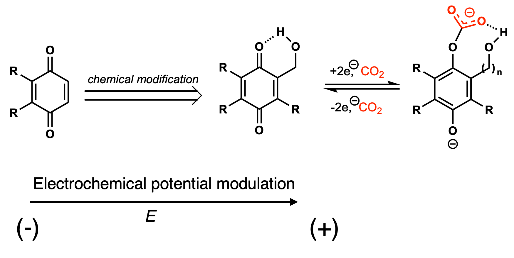
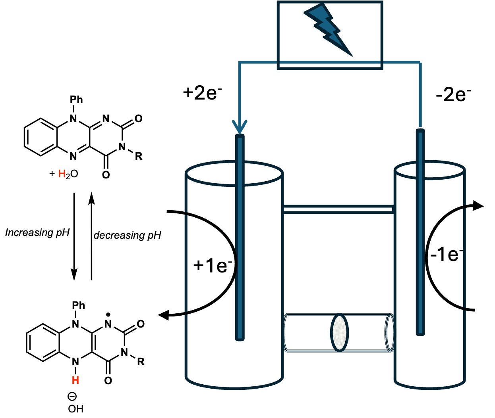

Ph.D. Candidate at UC Irvine
DOE SCGSR Fellow at Brookhaven National Lab
Advancing scalable CO₂ capture technologies by understanding the fundamental mechanisms at play on the molecular level for both aqueous and organic systems.
My work connects targeted molecular design with comprehensive electrochemical and spectroscopic analysis to understand processes happening at the molecular level. Select a topic below to read the research summaries.
Electrochemical CO₂ capture using quinones is a promising alternative to energy-intensive amine scrubbing. However, the negative redox potentials needed to generate strongly nucleophilic dianions also increase oxygen sensitivity. My research tries to solve this problem by introducing a covalently linked H-bonding arm connected through a flexible benzylic C–C bond to the quinone scaffold. Upon two-electron reduction, this arm rotates to position the hydroxymethyl group to stabilize the dianion via H-bonding, circumventing the fundamental linear trade-off that has constrained quinone-based capture systems.

Nature has spent billions of years perfecting the proton-coupled electron transfer (PCET) chemistry of flavins: biological cofactors that drive essential redox processes across all living systems. My research asks: can we harness this biologically optimized 2e⁻/2H⁺ reactivity for CO₂ capture? The challenge is that natural flavins are poorly soluble in water, limiting their practical use. I addressed this by synthesizing novel alloxazine derivatives bearing distal charged groups that dramatically enhance aqueous solubility while preserving the redox active core. Importantly, these distal groups lead to stability differences as demonstrated by spectroelectrochemical and pulse radiolysis studies.

Early in my graduate research experience, I had the opportunity to take part in rigorous, multi-step organic synthesis and complex catalysis. During my time in the Pronin Lab (UCI), I investigated cobalt-catalyzed radical–polar crossover reactions, running intricate, air-sensitive syntheses. By using isotopic labeling (¹⁸O) and multi-technique characterization (NMR, IR, mass spectrometry), I was able to elucidate some key steps of cobalt-salen catalyzed hydrofunctionalization and ring-opening reactions.
Modern physical and organic chemistry generates massive datasets that require sophisticated analysis. To accelerate our research pipeline, I built custom Python-based tools to automate the processing of complex spectroscopic and electrochemical data, significantly reducing analysis time and minimizing human error while mentoring undergraduate researchers in computational techniques.